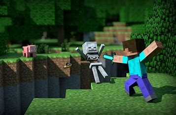

Tady musíš přežít!
Survival mód je jedním z hlavních herních režimů v Minecraftu a zároveň tím, který hráče staví před skutečné výzvy. Na rozdíl od Creative módu, kde má hráč neomezené suroviny a svobodu tvořit bez omezení, je Survival zaměřený na přežití v divoké přírodě, sběr surovin, stavění přístřeší a obranu proti nepřátelům. Tento režim přináší do hry napětí, dobrodružství a skutečný smysl pro postup.
Hráč začíná se zcela prázdným inventářem a musí se co nejrychleji postarat o základní potřeby: dřevo na nástroje, jídlo na doplnění energie a úkryt před nocí, kdy se objevují nepřátelské příšery. Mezi nejčastější nepřátele patří kostlivci, zombie nebo výbušní creepeři. S postupem času si hráč vylepšuje výbavu, staví bezpečné útočiště, pěstuje plodiny a objevuje nové materiály jako železo, diamanty nebo netherit.
Survival není jen o boji a přežití – velkou roli hraje i průzkum. Hráči se vydávají do jeskyní, oceánů, vesnic nebo do tajemných struktur, jako jsou pevnosti nebo chrám v džungli. Jakmile se cítí silnější, mohou se pokusit otevřít portál do Netheru – nebezpečné dimenze plné lávy a nových výzev. Konečným cílem bývá porazit Ender Draka v dimenzi The End, ale většina hráčů si vytváří vlastní cestu a hraje tak, jak jim to vyhovuje.
Survival mód je také ideální pro hru více hráčů. Na serverech se lidé spojují, obchodují, staví společná města nebo se účastní různých výzev. To dodává hře další rozměr – komunikaci, spolupráci a i trochu konkurence.
Díky své variabilitě je Survival velmi oblíbený jak mezi začátečníky, tak mezi zkušenými hráči. Učí plánování, hospodaření se zdroji a rozhodování pod tlakem. Každý herní svět je unikátní a přináší nové zážitky. Minecraft Survival tak nabízí autentický zážitek z přežití v otevřeném světě, kde se každá stavba i úspěch rodí z poctivé práce. Je to režim, který tě odmění za trpělivost, odvahu a vynalézavost.
Mnoho hráčů používá Creative mód pro tvorbu map, které později sdílí s ostatními. Mnozí začínají se základními stavbami, jako jsou dřevěné chatky nebo malé farmy. Jakmile získají více zkušeností, zkoušejí složitější projekty – moderní domy, podzemní základny nebo realistické repliky známých budov. Někteří hráči dokonce pracují ve skupinách na velkých serverech, kde společně vytvářejí celé města nebo tematické parky. Stavění v Minecraftu není jen zábava, ale také kreativní proces, který rozvíjí prostorovou představivost, trpělivost a smysl pro detail. Někteří lidé si plánují stavby dopředu na papíře nebo v externích programech, jiní staví rovnou podle pocitu. Každý projekt je jedinečný a odráží osobnost a styl samotného tvůrce.